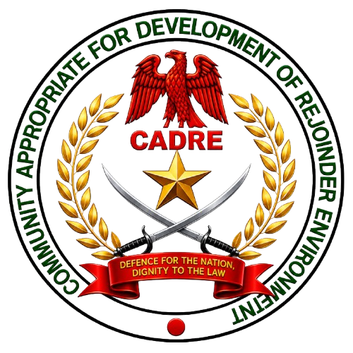

CADRE MARSHAL CORPS
Defence for the Nation,
Dignity to the Law.
"In Unity We Serve."
Learn More

"In Unity We Serve."
Learn MoreCADRE Marshal Corps is a youth-focused paramilitary organization established in 2012 to promote discipline, patriotism, self-reliance, and national development throughout Nigeria and beyond.
To instill in youths the capacity to utilize their leisure hours productively through meaningful activities, leadership training, and community service that contribute positively to society.
To develop a strong sense of national identity, unity, and responsibility among citizens while promoting peace and cooperation across different communities.
To encourage loyalty, commitment, and dedication to the nation, inspiring members to uphold the values and interests of Nigeria at all times.
To cultivate self-control, integrity, responsibility, and accountability in individuals, enabling them to become role models within their communities.
To contribute to the creation of a peaceful and secure environment where citizens can live, work, and thrive without fear through collaboration and community engagement.
To promote discipline among Nigerian youths by encouraging respect for authority, obedience to lawful directives, and adherence to ethical standards.
To foster honesty, integrity, respect, and responsibility while discouraging behaviors that negatively affect individuals and society.
To work closely with relevant security and law enforcement agencies in maintaining public order, safety, and security within communities.
To equip young people with leadership skills, confidence, knowledge, and opportunities that enable them to become productive members of society.
To contribute to the social, economic, and civic development of Nigeria through community service, volunteerism, and nation-building initiatives.
To collaborate with relevant security agencies in gathering useful information that supports public safety, crime prevention, and national security while operating within the law.
The CADRE MARSHAL CORPS was established in 2012 under the visionary leadership of Reverend Adeleke Israel Emioye.
The organization was officially inaugurated on August 31st, 2014.
It began operations in Ona-Ara Local Government Area, Oyo State with 35 pioneer officers.